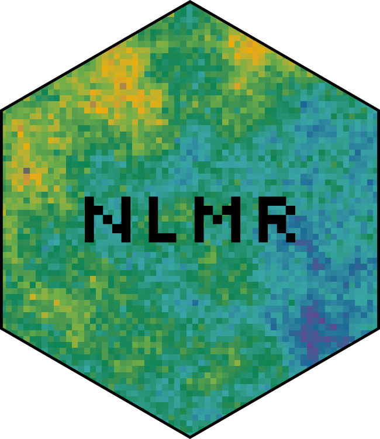

NLMR Overview and Tips
Marco Sciaini
2026-09-03
Source:vignettes/articles/overview_tips.Rmd
overview_tips.RmdOverview
Selection of possible merges
library(NLMR)
# 1.
edge_nlm <- nlm_edgegradient(100, 100)
distance_nlm <- nlm_distancegradient(100, 100, origin = c(20, 20,10, 10))
random_nlm <- nlm_random(100, 100)
# 2.
gauss_nlm <- nlm_gaussianfield(100, 100)
rectan_nlm <- nlm_randomrectangularcluster(100, 100, maxl = 30, minl = 10)
# 3.
mosaic_nlm <- nlm_mosaicfield(100, 100)
# 4.
planar_nlm <- nlm_planargradient(100, 100)
tess_nlm <- nlm_mosaictess(100, 100, germs = 200)
# plot it
merge_rasters <- function(...) {
raster::calc(raster::stack(...), mean, na.rm = TRUE)
}
raster::plot(raster::stack(list(
"a" = merge_rasters(edge_nlm, distance_nlm, random_nlm),
"b" = merge_rasters(gauss_nlm, rectan_nlm),
"c" = merge_rasters(mosaic_nlm, random_nlm),
"d" = merge_rasters(planar_nlm, distance_nlm, tess_nlm)
)))Tips
If you are new to the raster package, I hope to collect here some useful tips how to handle raster data in general. Furthermore, this section also serves as a place to collect workflows on how to use NLMR and other R packages to simulate specific patterns one can find in the literature.
Basics
More specific tips
Use matrix of parameter to simulate landscapes
library(NLMR)
library(raster)
library(purrr)
library(tibble)
# simulation function that has the parameters we want to alter as input
simulate_landscape = function(roughness, weighting){
nlm_mpd(ncol = 33,
nrow = 33,
roughness = roughness,
rescale = TRUE) |>
util_classify(weighting = weighting)
}
# paramter combinations we are interested in
param_df = expand.grid(roughness = c(0.2, 0.9),
weighting = list(c(0.2, 0.8), c(0.2, 0.3, 0.5))) |>
as.tibble()
# map over the nested tibble and use each row as input for our simulation function
nlm_list = param_df |> pmap(simulate_landscape)
# look at the results
raster::plot(raster::stack(nlm_list))Simulate ecotones
Merging different types of NLMs, such as a planar gradient with a less autocorrelated landscape, provide a means of generating more complex landscapes and realistic-looking ecotones (Travis 2004):
library(NLMR)
# landscape with higher autocorrelation
high_autocorrelation <- nlm_edgegradient(ncol = 100, nrow = 100, direction = 80)
# landscape with lower autocorrelation
low_autocorrelation <- nlm_fbm(ncol = 100, nrow = 100, fract_dim = 0.5)
# merge to derive ecotone
merge_rasters <- function(...) {
raster::calc(raster::stack(...), mean, na.rm = TRUE)
}
ecotones <- merge_rasters(low_autocorrelation, high_autocorrelation)
# look at the results
raster::plot(raster::stack(list("Low autocorrelation" = low_autocorrelation,
"High autocorrelation" = high_autocorrelation,
"Ecotones" = ecotones
)))